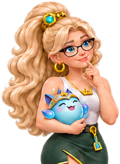

Welcher Cup passt zu dir?
Finde Turniere für deinen Rang – je nachdem, ob du einfach mitspielen willst oder schon qualifiziert bist.

Gute Games. Gute Gesellschaft.
TFT zusammen erleben – vom Community-Cup bis zur Weltmeisterschaft. Alle Turniere mit Rang, Anmeldeschluss und Anmeldelink.

Alle Turniere trägt die Redaktion ein und prüft sie an den Veranstalterquellen. Die Anmeldung läuft direkt beim Veranstalter.
Finde Turniere für deinen Rang – je nachdem, ob du einfach mitspielen willst oder schon qualifiziert bist.
